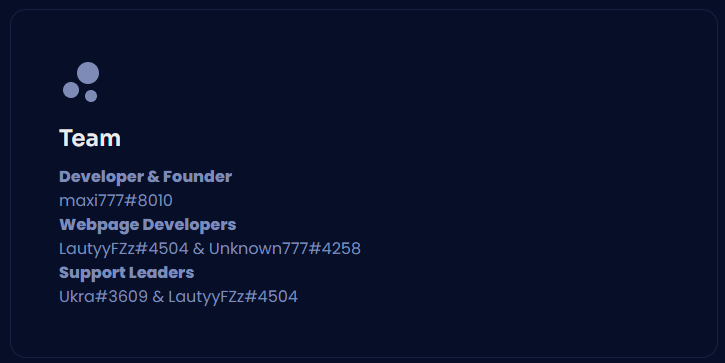

Colaboradores:
Los colaboradores son personas que pertenecen o pertenecieron al equipo de UKRA.dev para los proyectos realizados.
Después de lanzar el proyecto: Neox Life - Reborn v2. Nació el equipo UKRA.dev. En la producción de los equipos, se desplegaron las áreas de Desarrollo, Diseño y Marketing.
COO y Director de Proyecto: Fede#4883 (Discord)
Coordinadora de Diseño: Valkyria#0015 (Discord)
Coordinadora de Marketing: Roxii142#0949 (Discord)
Después de finalizar el proyecto: Neox Life.v1 nació el equipo de Trust AntiCheat. Su dueño, maxi777#8010, programador y fundador importante del proyecto Neox Life. Realizó el sistema anti-trampas para FiveM ideal para poder seguir los proyectos de los servidores con la tranquilidad de que los cheaters quedan fuera del juego.
